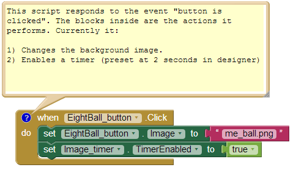

In this activity you will be creating a magic eight ball app, the idea is that when the user asks a question the magic eight ball will give them a randomly selected answer.
The original magic eight ball had a range of possible answers which you could use or make up your own.
| Positive | Negative | Neutral |
|---|---|---|
| It is certain | Don’t count on it | Reply hazy try again |
| It is decidedly so | My reply is no | Ask again later |
| Without a doubt | My sources say no | Better not tell you now |
| Yes definitely | Outlook not so good | Cannot predict now |
| You may rely on it | Very doubtful | Concentrate and ask again |
| As I see it, yes | - | - |
| Most likely | - | - |
| Outlook good | - | - |
| Yes | - | - |
| Signs point to yes | - | - |
If you have never used app inventor before you may want to visit http://appinventor.mit.edu/ and watch this introduction video.
To save time and help you focus on the programming of the magic eight ball some aspects have been completed in advance and saved in a template file. Download this file to your computer and follow the steps in the first part of the video to test the app.
Currently all the app does is change the image on the button when the button is clicked, the video will also show you how to test the app using the emulator.
Continue to watch the video and follow the steps to make the app choose and random answer and display it on the button as text.
Our app would be more impressive if it spoke the answers out to us as well as displaying them as text. The next part of the video show you how to use the texttospeech object in app inventor. Do be aware this can only say real words, it won’t understand misspelt words.
You probably found that the app didn’t quite behave as expected, the text and speech didn’t match up? Why was this? Currently our app does this:
The problem is that the app picks a random answer twice, these answers could be different and result in different things being displayed and read aloud. This is an example of a logical error, the code makes sense to the machine but doesn’t do what we thought it would.
To fix the issue we need to pick a random answer once and store that answer in a variable. We will then read that variable and use if for the text and the speech.
The next part of the video explains this in more detail.
You Magic eight ball app is now complete. Something that all good programmers do is to document what there code does. Add to the comments given to you in the template to explain what your app now does.

Now that you have followed the tutorial to create a magic eight ball, lets see if you can add to it. Here are some ideas for extending your app: